第11章 数学专题
整除
教材定义：设 a, b ∈ Z，且 b ≠ 0。
如果存在整数 q，使得：
a = bq
则：
a叫做b的倍数b叫做a的因数- 或者说
b能整除a - 或者说
a能被b整除
记作：
b | a
如果 b 不能整除 a，记作：
b ∤ a
引理 1
若：
a | b
a | c
则：
a | c
教材证明思路：
b = aq1
c = bq2
⇒ c = a(q1q2)
引理 2
教材给出结论：
若：
a, b ∈ Z
a | b
|b| < |a|
则：
a = 0
带余除法
若：
a, b ∈ Z
b ≠ 0
则一定有且只有两个整数 q、r，使得：
a = bq + r
0 ≤ r < |b|
最大公约数
设若干正整数：
a1, a2, ..., an
若正整数 d 满足：
d | a1
d | a2
...
d | an
则 d 叫做这些数的公约数。
公约数中最大的一个称为 最大公约数。
辗转相除法
教材给出引理：
若：
a > b
a = bq + r
0 < r < b
则：
gcd(a, b) = gcd(b, r)
教材示例：求 6731 和 2809 的最大公因数。
6731 = 2809 × 2 + 1113
2809 = 1113 × 2 + 583
1113 = 583 × 1 + 530
583 = 530 + 53
530 = 53 × 10 + 0
所以：
gcd(6731, 2809) = 53
教材给出的代码：
int gcd(int a, int b) {
return b ? gcd(b, a % b) : a;
}
复杂度：
O(log(max(a, b)))
gcd 的特殊情况
教材指出：
gcd(0, 0)
不存在。
对任意正整数 a：
gcd(0, a) = a
二进制算法
教材指出：二进制算法通过不断去除因子 2 来降低常数。
int gcd(int a, int b) {
if (a == b) return a;
if (a < b) return gcd(b, a);
if (a % 2 == 0 && b % 2 == 0) return 2 * gcd(a / 2, b / 2);
if (a % 2 == 0 && b % 2) return gcd(a / 2, b);
if (a % 2 && b % 2 == 0) return gcd(a, b / 2);
if (a % 2 && b % 2) return gcd(b, a - b);
}
最小公倍数
设 a、b 为正整数，m 为非负整数。
若：
a | m
b | m
则称 m 为 a 和 b 的公倍数。
所有公倍数中最小的正数，称为 最小公倍数，记作：
lcm(a, b)
教材给出的关系：
lcm(a, b) = a × b / gcd(a, b)
为避免中间结果溢出，教材建议使用：
a / gcd(a, b) * b
而不是：
a * b / gcd(a, b)
算数基本定理（唯一分解定理）
教材给出：
设 n ≥ 2 为整数，则存在唯一分解：
n = p1^α1 × p2^α2 × ... × pm^αm
其中：
p1 < p2 < ... < pm
且：
pi为质数αi为正整数
约数个数定理
若：
n = p1^α1 × p2^α2 × ... × pm^αm
则 n 的约数个数为：
d(n) = (α1 + 1)(α2 + 1)...(αm + 1)
教材示例：
28 = 2^2 × 7
所以：
d(28) = (2 + 1)(1 + 1) = 6
约数和
教材给出：
S(n)
= (1 + p1 + p1^2 + ... + p1^α1)
(1 + p2 + p2^2 + ... + p2^α2)
...
(1 + pm + pm^2 + ... + pm^αm)
教材示例：
S(28) = (1 + 2 + 4)(1 + 7) = 56
裴蜀定理
对于不定方程：
ax + by = m
其有解的充要条件是：
gcd(a, b) | m
教材给出的重要推论：
当 a、b 互质时，a、b 的整系数线性组合可以得到所有整数。
质数与合数
质数
教材定义：
一个大于 1 的正整数，只能被 1 和自身整除，不能被其他正整数整除，这样的正整数叫做 质数。
合数
一个正整数，除了能被 1 和自身整除外，还可以被其他正整数整除，这样的正整数叫做 合数。
质因数
若正整数 a 有一个因数 b，而 b 又是质数，则 b 叫做 a 的 质因数。
教材指出，全体正整数可分为 3 类：
- 整数 1
- 全体质数
- 全体合数
引理
如果 a 是一个大于 1 的整数，则 a 的大于 1 的最小因数一定是质数。
该引理说明：
任何大于 1 的整数都至少有一个质因数。
质因数分解
题目描述
已知正整数 n 是两个不同质数的乘积，试求两者中较大的那个质数。
输入格式：
一个正整数 n
n ≤ 2 × 10^9
输出格式：
一个正整数 p，即较大的那个质数
教材样例：
输入：
21
输出：
7
参考程序：
#include <iostream>
using namespace std;
int main() {
int n;
cin >> n;
for (int i = 2; i <= n; i++) {
if (n % i == 0) {
cout << n / i << endl;
break;
}
}
return 0;
}
教材还给出引理：
如果 a > 1，而所有：
≤ √a
的数都除不尽 a，则 a 是质数。
质数个数定理
教材定义：
π(x)
为不大于 x 的质数个数，并给出：
lim(x→∞) π(x) / (x / log x) = 1
筛法求质数
朴素筛法
枚举 2 到 n 的每个数 i，将：
2i, 3i, ...
标记为合数。
枚举结束后仍未被标记的数即为质数。
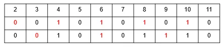
教材代码：
vector<int> get_primes(int n) {
vector<int> v;
for (int i = 2; i <= n; i++) {
if (!book[i]) v.push_back(i);
for (int j = 2 * i; j <= n; j += i)
book[j] = true;
}
return v;
}
教材给出的时间复杂度：
O(n log n)
埃式筛法
教材表述：
只有质数才可能标记后面的合数。
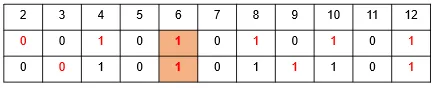
vector<int> get_primes(int n) {
vector<int> v;
for (int i = 2; i <= n; i++) {
if (!book[i]) {
v.push_back(i);
for (int j = i * i; j <= n; j += i)
book[j] = true;
}
}
return v;
}
教材给出的时间复杂度：
O(n log log n)
欧拉筛法（线性筛法）
教材思想：
设 x 的最小质因数为 d，则 x 只会被 d 标记。
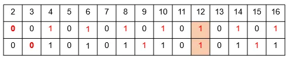
教材给出的时间复杂度：
O(n)
代码：
vector<int> get_primes(int n) {
vector<int> v;
for (int i = 2; i <= n; i++) {
if (!book[i]) v.push_back(i);
for (int j = 0; v[j] <= n / i; j++) {
book[v[j] * i] = true;
if (i % v[j] == 0)
break;
}
}
return v;
}
集合论
集合与元素
- 集合：由确定的对象（客体）构成的集体
- 元素：集合中的对象
集合与元素的关系使用：
∈
∉
表示。
集合的表示方法
列举法
教材示例：
A = {a, b, c, d}
描述法
教材示例：
B = {x | x is even}
有限集和无限集
有限集合
元素个数有限的集合。
如果 A 是有限集合，用：
|A|
表示 A 中元素的个数。
教材示例：
A = {1, 2, 3}
|A| = 3
无限集合
元素个数无限的集合。
教材示例：所有自然数 N 构成的集合是无限集合。
包含关系
若集合 A 中的元素都是集合 B 中的元素，则称：
B包含AA包含于BA是B的子集
记作：
A ⊆ B
教材示例：
N ⊆ R
韦恩图
韦恩图又叫文氏图，用固定位置的交叉封闭曲线内部区域表示集合及其关系。
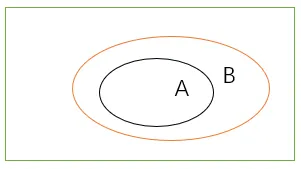
真包含关系
如果：
A ⊆ B
A ≠ B
则称 A 是 B 的真子集，记作：
A ⊂ B
子集关系性质
- 自反性：
A ⊆ A - 传递性：若
A ⊆ B且B ⊆ C，则A ⊆ C - 反对称性：若
A ⊆ B且B ⊆ A，则A = B
特殊集合
全集
包含所讨论的所有集合的集合称为全集，教材记作：
E 或 I
空集
没有元素的集合称为空集，记作：
Ø
教材列出性质：
- 任何元素都不属于空集
- 空集是任何集合的子集
- 空集是唯一的
例如：
A = {1, 2}
其子集有 4 个：
{1}
{2}
{1, 2}
Ø
幂集
由集合 A 的所有子集构成的集合称为 A 的幂集。
教材记作：
P(A)
或：
2^A
如果：
|A| = n
则：
|P(A)| = 2^n
补集
由不属于 A 的元素构成的集合称为 A 的补集。
教材记作：
~A
集合运算
教材列出：
交换律
A ∩ B = B ∩ A
A ∪ B = B ∪ A
结合律
(A ∩ B) ∩ C = A ∩ (B ∩ C)
(A ∪ B) ∪ C = A ∪ (B ∪ C)
分配律
A ∩ (B ∪ C) = (A ∩ B) ∪ (A ∩ C)
A ∪ (B ∩ C) = (A ∪ B) ∩ (A ∪ C)
容斥原理
教材指出，在计数时必须注意不重不漏。
基本思想：
对包含对象的集合中所有对象数目求和，再把重复计算的部分排斥出去。
两集合容斥原理
|A ∪ B| = |A| + |B| - |A ∩ B|
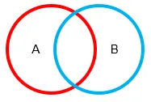
三集合容斥原理
|A ∪ B ∪ C|
= |A| + |B| + |C|
- |A ∩ B|
- |A ∩ C|
- |B ∩ C|
+ |A ∩ B ∩ C|
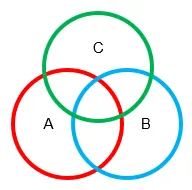
等差数列
对于数列 {a_n}，若满足：
a_n - a_(n-1) = d
其中：
d ∈ Rn ∈ N
则称该数列为等差数列。
第 n 项：
a_n = a_1 + (n - 1)d
前 n 项和：
S_n = (a_1 + a_n)n / 2
等比数列
对于数列 {a_n}，若满足：
a_n / a_(n-1) = q
且：
n ≥ 2
a_(n-1) ≠ 0
q ≠ 0
则称其为等比数列。
第 n 项：
a_n = a_1 × q^(n-1)
前 n 项和：
S_n = n × a_1 q = 1
S_n = a_1(1 - q^n) / (1 - q) q ≠ 1
平面直角坐标系
两点间距离
任意两点：
p1(x1, y1)
p2(x2, y2)
之间的距离：
|p1p2| = √((x1 - x2)^2 + (y1 - y2)^2)
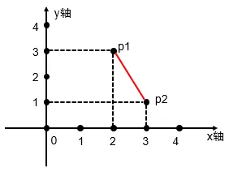
点到一般直线的距离
点：
p1(x1, y1)
到直线：
Ax + By + C = 0
的距离：
|Ax1 + By1 + C| / √(A^2 + B^2)
点到斜截式直线的距离
点：
p1(x1, y1)
到直线：
y = kx + b
的距离：
|kx1 - y1 + b| / √(1 + k^2)
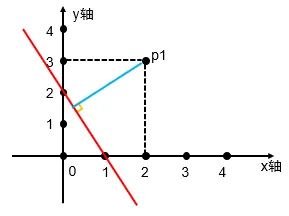
三角形
内角和
180°
判定
任意两边之和大于第三边。
面积公式
已知底 a、高 h：
S = ah / 2
海伦公式
已知三边 a、b、c：
p = (a + b + c) / 2
面积：
S = √(p(p-a)(p-b)(p-c))
多边形
n 边形内角和
(n - 2) × 180°
判定
最长边小于其他边之和。
常见面积公式
长方形：
S = a × b
平行四边形：
S = a × h
梯形：
S = (a + b)h / 2
圆
设圆半径为 r。
直径
d = 2r
周长
C = 2πr
面积
S = πr^2
补充
球的体积：
V = 4πr^3 / 3
圆柱体积：
V = πr^2h
排列与组合基础公式
排列数（有序选取）
组合数（无序选取，杨辉三角元素）
杨辉三角递推公式
对称恒等式
加法原理和乘法原理
加法原理
加法原理是分类计数原理。
如果完成一件事有 n 类方式，第 1 类有 M1 种方法，第 2 类有 M2 种方法，……，第 n 类有 Mn 种方法，则总方法数为：
M1 + M2 + ... + Mn
教材例：修改密码 abcdefg。
- 方法一：将其中一个字母改为大写，共 7 种
- 方法二：在最后增加一个数字，共 10 种
两种方法互不干扰，因此：
7 + 10 = 17
乘法原理
如果完成一件事需要分成 n 个步骤，第 1 步有 m1 种方法，第 2 步有 m2 种方法，……，第 n 步有 mn 种方法，则总方法数为：
m1 × m2 × ... × mn
教材例：三件上衣，两条裤子。
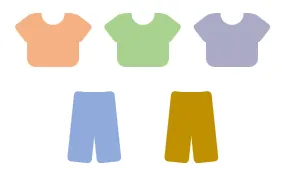
先选上衣，再选裤子，采用分步乘法：2×3=6 种
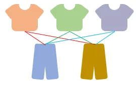
3 × 2 = 6
密码锁示例
一个密码箱左右有两个锁，每个锁密码都是三位数，每位可取 0~9。
一个锁共有：
10 × 10 × 10 = 1000
种。
两个锁之间采用分类加法：
1000 + 1000 = 2000
常见问题
捆绑法
7 个学生站成一排，甲、乙必须站在一起。
教材做法：
- 将甲乙捆绑
- 排列 6 个整体
- 甲乙内部可交换
结果：
A_6^6 × 2 = 1440
插空法
7 个学生站成一排，甲乙互不相邻。
教材做法：
- 先排列其余 5 人
- 形成 6 个空隙
- 再将甲乙插入不同空隙
教材结果：
A_5^5 × A_6^2 = 3600
排除法
重新排列 1234，使每个数字都不在原来的位置。
教材列举：
2 个数字都在原来位置：
1243 1432 1324 4231 3214 2134
1 个数字在原来位置：
1423 1342 4213 3241 4132 2431 3124 2314
教材计算结果：
4! - 15 = 9
鸽巢问题
鸽巢问题又称 抽屉原理 或 狄里克雷原理。
教材例：
6 只鸽子飞回 5 个鸽舍，至少有 2 只鸽子进入同一个鸽舍。
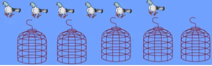
计算：
至少数 = 商 + 1
= 6 / 5 + 1
= 2
随堂检测
1. 满分学生
一次期末考试，某班有 15 人数学得满分，有 12 人语文得满分，并且有 4 人语、数都是满分，那么这个班至少有一门得满分的同学有（ ）人。
- A. 23
- B. 21
- C. 20
- D. 22
查看答案
答案：A
2. 容斥计数
在 1 和 2015 之间（包括 1 和 2015 在内），不能被 4、5、6 三个数任意一个数整除的数有（ ）个。
- A. 1073
- B. 1074
- C. 1075
- D. 1076
查看答案
答案：C
3. 三集合问题
某班有 50 名学生，每位学生发一张调查卡，上写着 a、b、c 三本书的书名。
统计如下：
- 只读
a者 8 人 - 只读
b者 4 人 - 只读
c者 3 人 - 全部读过者 2 人
- 读过
a、b两本书的有 4 人 - 读过
a、c两本书的有 2 人 - 读过
b、c两本书的有 3 人
问：
- 读过
a的人数是（ ） - 一本书也没有读过的人数是（ ）
- A.
12, 30 - B.
12, 32 - C.
8, 30 - D.
8, 32
查看答案
答案：A
4. 互质数个数
10000 以内，与 10000 互质的正整数有（ ）个。
- A. 2000
- B. 4000
- C. 6000
- D. 8000
查看答案
答案：B
5. 子集数量
设含有 10 个元素的集合的全部子集数为 S，其中由 7 个元素组成的子集数为 T，则 T/S 的值为（ ）。
- A.
5/32 - B.
15/128 - C.
1/8 - D.
21/128
查看答案
答案：B
6. 选班干部
班上有 9 位同学，现在要选出 2 位纪律委员和 1 位班长，共有多少种选法（ ）。
- A. 252
- B. 256
- C. 258
- D. 128
查看答案
答案：A
7. 选书并安排阅读顺序
黑猫老师在书店看中 4 本 C++ 书和 3 本数学书，但他只能各买 2 本，并且希望每周看完 1 本书，请问有多少种安排方式（ ）。
- A. 18
- B. 24
- C. 216
- D. 432
查看答案
答案：D
8. 错排问题
书架上放有编号：
1, 2, ..., n
的 n 本书。
现将 n 本书全部取下然后再放回去，要求每本书都不能放在原来的位置上。
例如 n = 3 时，原来位置为：
1 2 3
放回去只能为：
3 1 2
或：
2 3 1
当 n = 5 时，满足条件的放法共有（ ）种。
- A. 42
- B. 43
- C. 44
- D. 45
查看答案
答案：C
9. 包含数字 8
从 1 到 2018 这 2018 个数中，共有（ ）个包含数字 8 的数。
- A. 541
- B. 542
- C. 543
- D. 544
查看答案
答案：D
10. 苹果与盘子
有 7 个一模一样的苹果，放到 3 个一样的盘子中，一共有（ ）种放法。
- A. 7
- B. 8
- C. 21
- D.
3^7
查看答案
答案：B